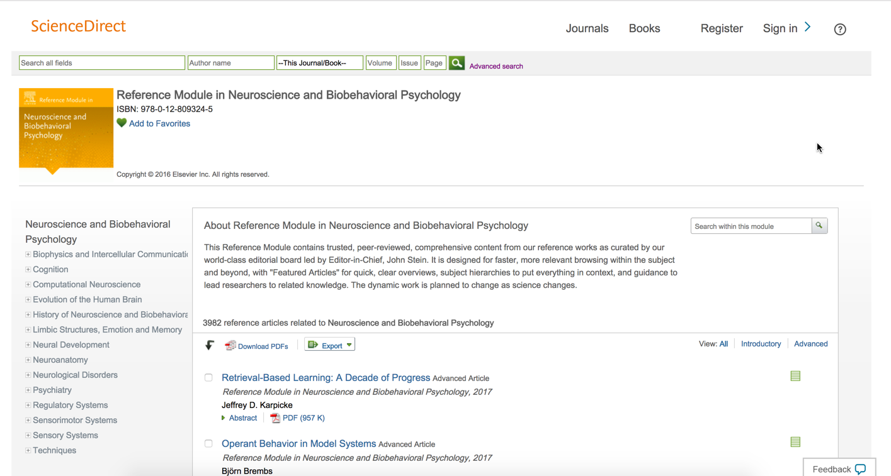

“To be a great designer, you need to look a little
deeper into how people think & act.” – Paul Boag
About
Srinivas Edala
Principal UX Designer | Elsevier Science
With over 18 years of experience at Elsevier Science, I specialize in developing
user-centered
designs that enhance product usability and improve the overall user experience. My expertise
spans Human-Computer Interaction (HCI), User Research, Responsive Design, Accessibility, and
Analytics.
I am a creative, collaborative, and results-driven UX researcher, passionate about
understanding
user needs and aligning them with business goals to create intuitive, user-friendly designs. My
approach focuses on applying design knowledge to develop accessible and efficient solutions that
benefit both users and the organization.
I hold a degree in Human-Computer Interaction from Wright State University, where
I graduated in
2001. Afterward, I pursued doctoral studies in Aviation Human Factors. At Elsevier, I work
closely with end users and stakeholders, ensuring that our designs are both functional and
user-focused.
Portfolio
EV Record Page
Easily scan the record page
Content Recommendations
Upsell Premium Relevant Content
1-Click PDF Download
Download PDFs in Bulk Easily
Reference Modules
Foundational Content for Every Subject Area
ScienceDirect Declutter
Clean up UI based on the user feedback & usage
ScienceDirect Rebrand
Apply New Digital Branding Styles
Digital Commons Journals
Empowering Journal Editors with Customizable Publishing Tools
Digital Commons Repository
Repository Stewardship Redesign
ScienceDirect Rebrand
Apply New Digital Branding Styles
Contact
Address
11115 Ashbury Meadows Drive, Dayton, OH 45458, United States
Unified Engineering Village Record Page for
improved usability.
Engineering Village is a powerful search and discovery platform
designed for
engineers, researchers, and technical professionals. It offers access to an
extensive collection of engineering literature, research papers, patents, and
industry standards. Users can explore specialized databases such as Inspec and
Compendex with ease, utilizing advanced search capabilities. The platform
supports informed decision-making through features like filtering options,
citation analysis, and collaboration tools, which streamline the research
workflow.
The Problem: Engineering Village initially had
two separate
record pages: a Simple Record Page
and a Detailed Record Page. The record page is where users view detailed
information about a selected document. Users would first see the Simple Record
Page after selecting a search result, containing limited metadata. To access the
full range of metadata and document details (such as indexing information,
references, citations, and other metadata like funding information etc.,), users
had to navigate to the Detailed Record Page via a link in the left-hand
navigation.
This two-page structure created usability challenges. Users had to switch
between pages to access all the information, adding unnecessary steps to their
research workflow. Additionally, maintaining two separate pages added complexity
for the development team
The Solution: I proposed combining both record
pages into a
single, unified Record Page that presents all relevant metadata in one view.
This design hypothesis was based on the idea that, with a more efficient layout,
we could organize the detailed metadata (bibliographic info, subject areas,
keywords, classification codes, etc.) in a way that provides an optimal user
experience without overwhelming users.
The new page design placed critical information (abstracts and bibliographic
data) "above the fold," while additional metadata was organized into expandable
sections, ensuring a clean and navigable interface. This approach allowed users
to access all necessary details without needing to switch between pages.
Testing and validation: We conducted user
testing to
validate this hypothesis, including A/B testing where 50% of users interacted
with the new unified record page. Additionally, we used Pendo to gather user
feedback directly from the live site, providing insight into user satisfaction
with the changes.
The response was overwhelmingly positive, with users appreciating the
streamlined experience and improved accessibility to all document metadata.
Based on the results, we rolled out the combined record page design to all
users, simplifying both the user experience and the maintenance load for the
engineering team.
In Conclusion: This redesign significantly
enhanced the
usability of the record page in Engineering Village by merging two disparate
pages into a unified experience. It reduced user frustration, minimized clicks,
and provided a cleaner, more efficient interface. The success of the project was
supported by both user feedback and quantitative A/B testing data, making it one
of the highlights of my UX portfolio.
Feel free to refer to the accompanying visuals for a comparison between the old
two-page design and the new unified record page.
Simple Record Page (before):
Detailed Record Page (before):
Content Recommendations
Make relevant-content more discoverable to the user when they
visit the article page. The millenial mindset has changed from minutes to
seconds for discovering information. To capture the audience during the brief
dwell time, it is imperative to provide relevant content quickly, easily and
non-intrusively.
We generated 4% growth/year in article views
and PDF
downloads.
1-Click PDF Download
Our researchers download multiple documents. The generic
filenames do not meet our user expectations. This widget allows users to
nominate a naming standard and download multiple documents in one go.
This feature increased our download volume by 2o% from that
widget and decreased the file management overhead by 6 secs per user in A/B
tests.
We separated the file renaming widget and download widget with
a split button. This helped in reducing the number of clicks to just one click!
Reference Modules
Research trainees seek foundational content during early stages
of their research. ScienceDirect introduced "Reference Modules" -- a collection
of encyclopedic reference articles from our Major Reference Works combined with
the new and exclusive editorial commentary -- to create one online authoritative
information source.

Reference Modules provide instructional guidance for
researchers and scholars alike. Reference module pages are further divided to
topics and sub-topics as shown below.
Bootstrapping taxonomy, assembling disperse content,
multi-version concurrency control, search federation, huddling global subject
matter experts made this project extremely challenging.
ScienceDirect Declutter
The goal was to clean up the user interface of the main pages
of ScienceDirect based on the user feedback and their usage and also make them
more accessible applying techniques such as ARIA for users with assistive
technologies. We collaborated with external users to review our screens for
accessibility checks alongside the development process to make them accessiblity
compliant.
We have specifically looked at the user feedback and the
internal usage stats to decide on the items to declutter. This was the first
step before we had a sitewide rebranding initiative taken across the company. We
A/B tested the new screens to make sure the removed items did not negatively
affect the user experience and usage driven metrics.
This was a challenging project as we were the first product in
our company to have introduced A/B testing into our developmental workflow.
Based on the AB test numbers, it was a huge success in terms of UI improvement
and the number of clicks have increased. See the old screens below.
ScienceDirect Rebrand
This project was to apply new Responsive Design Digital
Branding styles to ScienceDirect platform that have been introduced across
Elsevier platforms to make all products coherent and responsive to all devices.
Rebranding the SD user interface has resulted in improved user engagement and
article download KPIs.
Check the old screens below.
Digital Commons Journals Publishing Templates
Empowering Journal Editors with Self-Service
WYSIWYG Publishing Tools.
Digital Commons Journals is a platform that enables academic
institutions and organizations to publish and manage scholarly journals. It
provides pre-defined templates for easy setup, facilitating key aspects such as
editorial workflows, peer review management, and the publishing process. The
platform is designed with simplicity in mind, allowing admins and editors to
manage content with minimal technical expertise.
The setup process begins with admins and editors selecting from a range of
pre-defined templates. These templates can be customized to reflect the
branding, layout, and specific content management needs of the journal. The
platform also supports editorial workflows and peer review processes to
streamline journal management. While basic customizations can be managed by
admins, more advanced or complex changes may require assistance from technical
support.
The Problem:
Design Flexibility: The reliance on pre-defined
templates can restrict design customization, limiting the unique look
and feel of journals. Common requests include changes to banner images
or modifications to the top content of the page. These requests often
require submission to Customer Support, leading to delays in achieving
the desired modifications.
Reliance: For advanced customization or deeper
functionality, users often need to rely on Customer Support or technical
teams.
Template Constraints: Journals may lack the ability to
implement features beyond the existing framework, reducing innovation.
The Solution:
More Customization Options: Offering greater flexibility
in design and layout would empower editors to tailor journals more
distinctively.
Improved Autonomy: Reduce the need for technical support
by expanding the platform's self-service capabilities. This could
include offering more template designs and enabling admins/editors to
build pages from scratch. They could use widgets like rich text editors,
images, videos, accordions, and carousels, while also adding content
dynamically through API integrations.
Workflow Screens: Please review the screens
showing how admins and editors can alter the look and feel of the page. They can
also create new pages using templates or start from a blank page by adding
widgets and content
Edit existing page
1. Admins and editors can change, add, or
delete menu items by clicking the “Edit” link next to the menu, as shown
below.
2. Admins and editors can change, add, or delete the banner section
by clicking
the “Edit” link next to the banner, as shown below
3. Add a new section like banner section to the existing page as
shown
below
Adding new page
1. Admins and editors can add a new page from the front end by
either selecting a template or starting with a blank page and adding content and
widgets, as shown below.
2. Bootstrapping from a template...
3. Landing into an editable page instance
Compositing on a Blank Page
1. Admins can set the page settings, select layouts for each
section, and add new sections. Within each section, they can choose the layout,
add elements/components, and configure properties as shown in the screens
below.
2. Selecting the canvas layout
3. Customizing the layout
4. Adding elements.
5. Editing hierarchic layouts
6. WYSIWYG Editing
7. Publish/Preview In-Place
Digital Commons Institutional Repository
Putting Metadata and Content Stewardship with the
Publishers
The Digital Commons Institutional Repository is a platform designed
for academic institutions to collect, preserve, and disseminate their scholarly
works and research outputs. It provides a centralized repository for storing a
wide range of materials, including theses, dissertations, research papers,
faculty publications, and other academic content. The repository facilitates
easy access and sharing of these resources, supports institutional visibility,
and enhances research impact by making work accessible to a global audience. It
often includes features for managing metadata, ensuring long-term preservation,
and tracking usage metrics.
The Problem:
Users must manually enter metadata into separate Excel sheets for
each
type of publication, upload files individually, and input the file URLs into
the Excel sheet. The DCIR system sends an email notification after uploads
are accepted, but users often encounter issues due to metadata errors in the
Excel sheets. The system does not provide clear error messages, forcing
users to contact Customer Support to identify and resolve problems. This
process is cumbersome and presents a significant challenge for admins and
end users.
The Solution:
Users can bulk upload all files, with the system automatically extracting
metadata for each publication type. This metadata will be displayed on the HTML
page for admins to review and check for discrepancies. Users can edit the
metadata directly on the page and generate the necessary Excel sheet,
eliminating the need for manual entry. This process reduces errors and minimizes
the time spent on back-and-forth communication.